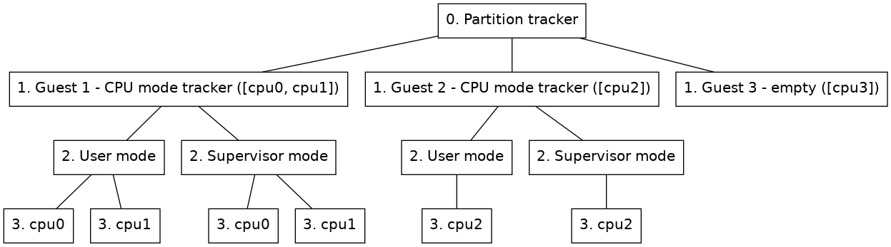

The Partition tracker is used to add separate trackers for different processors in the system. This can be useful if different operating systems are run on different processors.
The partition tracker is a stacked tracker where other trackers will be inserted as guests to the partition tracker.
This section describes how the partition tracker is represented in a node tree.
The partition tracker will be at the root of the node tree. Then each guest of the partition tracker will be represented with that guests representation of a node tree rooted at a child node of the partition tracker root node. A partition can also be empty, meaning that it does not contain any guest tracker.
Figure 6 shows an example of how a node tree, containing a partition tracker with two cpu mode trackers and an empty partition as guests, could look like.

Guest node
(Nodes on level 1 in figure 6.) This node will contain the root node of the guest inserted under the partition tracker. Two extra properties will be added to this node besides the guest tracker's original root properties.
By default the name property of the node will also be updated so that the name is prefixed with the partition name. This updating of the name can be removed by setting the include_partition_name attribute of the partition mapper to false.
The partition tracker includes some commands to manage guest partitions and parameters.
insert-empty-partition
Inserts a new partition that is not associated with any tracker. Some processors, cpus, have to be set for this partition and a partition name, partition, will also have to be specified. This partition will show up in the node tree when the OS Awareness framework is enabled, but that node will not have any children or be active at any point. A guest tracker can later be added to this node with the insert-tracker command.
insert-tracker
Inserts a new partition associated with a tracker component either on an existing empty node or as a new guest partition.
The component of the guest tracker is specified through the tracker argument of this command.
If adding a new guest, some processors associated with the partition will have to be specified through the cpus argument and a partition name has to be specified through the partition argument.
If a new tracker is added to an empty guest, the node argument is used to specify which guest node to insert the tracker on.
Optionally parameters can be passed on to the guest component via the parameters argument.
The component of the guest will end up in the component hierarchy under the partition tracker component, named either as the specified name argument or as the partition name prefixed with guest.
remove-partition
Remove an existing partition by selecting either a partition name, a partition node or a partition id.
load-parameters
Load configuration parameters for the partition tracker from a file.
save-parameters
Save the current configuration parameters to a file. If the no-children argument is given the parameters of the guest trackers will not be included in the saved file, it will then just include the partition tracker and which type of guests it has. By default the guest trackers parameters are also saved in the configuration file.
supports-parameters
Check if parameters file is supported by the partition tracker.